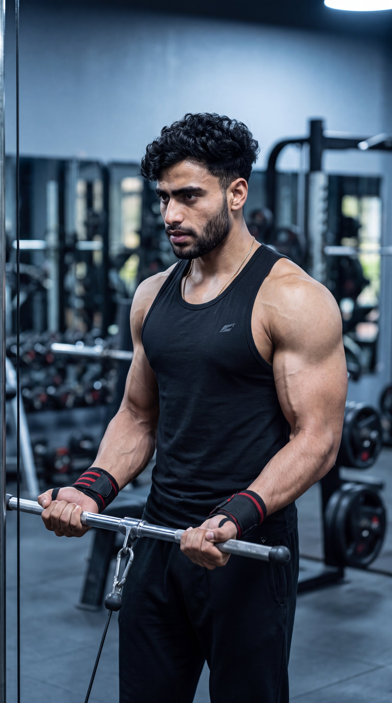

Primary Muscle
Biceps Brachii
Build Bigger Biceps, Maintain Constant Tension & Maximize Muscle Growth
The Cable Curl is one of the best isolation exercises for building stronger, fuller, and more defined biceps. Unlike traditional free-weight curls, the cable machine provides constant tension throughout the entire movement, keeping the biceps under load during both the lifting and lowering phases. This continuous resistance enhances muscle activation, improves the mind-muscle connection, and helps develop balanced arm strength. The exercise also recruits the brachialis, brachioradialis, and forearm muscles, making it an excellent choice for maximizing overall arm growth and improving biceps peak.

Biceps Brachii
Cable Machine
Beginner
Isolation
Discover which muscles are primarily responsible for the Cable Curl and which supporting muscles assist during elbow flexion, forearm stability, grip strength, and controlled arm movement. The constant cable tension keeps the biceps under load throughout the exercise, promoting greater muscle activation, balanced arm development, and improved muscle definition.
Front Upper Arms
Upper Arm Flexor
Forearm
Grip Muscles
Discover how the Cable Curl helps build bigger and stronger biceps through constant cable tension, improved muscle activation, controlled movement, and consistent resistance that promotes greater muscle growth, arm definition, and balanced strength.
Unlike free weights, the cable machine keeps continuous tension on the biceps throughout the entire movement, maximizing muscle engagement during both the lifting and lowering phases.
Continuous resistance increases time under tension, an important factor for stimulating muscle hypertrophy and developing fuller, stronger biceps.
The smooth resistance of the cable allows you to focus on squeezing the biceps through every repetition, improving muscle activation and exercise technique.
The cable encourages controlled movement and discourages excessive swinging, helping isolate the biceps while reducing unnecessary stress on the shoulders and lower back.
Performing Cable Curls with strict form helps both arms work evenly, improving muscle balance, coordination, and overall arm development.
Combining constant resistance, full range of motion, and progressive overload makes the Cable Curl one of the most effective exercises for increasing biceps size, strength, and overall arm definition.
Follow these step-by-step instructions to perform the Cable Curl with proper form, controlled movement, and continuous cable tension. Using the correct technique helps maximize biceps activation, improve muscle definition, and build bigger, stronger arms while minimizing unnecessary stress on the joints.
Attach a straight bar or EZ attachment to the low pulley. Stand upright with your feet shoulder-width apart and grasp the handle using an underhand grip with your arms fully extended.
Stand far enough from the machine to maintain cable tension before beginning each repetition.
Keep your elbows close to your sides with your chest lifted and shoulders relaxed. Maintain a neutral wrist position and avoid leaning backward before initiating the curl.
Your upper arms should remain stationary throughout the exercise.
Flex your elbows to curl the handle toward your shoulders while keeping your elbows tucked in. Focus on contracting your biceps instead of using momentum or swinging your body.
Move smoothly and let your biceps—not your shoulders—perform the work.
Pause briefly when the handle reaches the top of the movement and squeeze your biceps as hard as possible while maintaining full control of the cable.
Hold the contraction for one second to maximize your mind-muscle connection.
Slowly lower the handle back to the starting position while resisting the pull of the cable. Fully extend your arms without locking your elbows before beginning the next repetition.
Take two to three seconds during the lowering phase to maximize time under tension and stimulate greater biceps growth.
Avoid these common technique mistakes to maintain constant cable tension, maximize biceps activation, improve muscle contraction, and perform the Cable Curl safely and effectively for better arm growth.
Using momentum by rocking your torso reduces biceps activation and shifts the workload to the shoulders and lower back instead of isolating the arms.
Stand upright, brace your core, and use a lighter weight so your biceps perform all of the work.
Allowing your elbows to drift away from your sides reduces biceps isolation and recruits the shoulders, making the exercise less effective.
Keep your elbows close to your torso and fixed in position throughout every repetition.
Standing too close to the machine or relaxing at the bottom removes tension from the cable, decreasing muscle activation.
Step back slightly and maintain light tension on the cable before starting every repetition.
Letting the cable pull your arms down removes control during the eccentric phase and reduces time under tension, limiting muscle growth.
Lower the handle slowly over two to three seconds while resisting the pull of the cable and maintaining complete control.
Apply these practical coaching cues to improve your Cable Curl technique, maintain constant cable tension, maximize biceps activation, and perform every repetition with strict control for bigger, stronger, and more defined arms.
Your elbows should remain close to your sides throughout the entire movement. Allowing them to move forward shifts the workload away from the biceps and reduces exercise effectiveness.
Only your forearms should move while your upper arms stay completely still.
Step back slightly from the cable machine so the weight never rests on the stack. Continuous tension keeps your biceps working throughout the entire range of motion.
Never relax completely at the bottom of the movement.
Pause briefly when the handle reaches shoulder height and contract your biceps as hard as possible before lowering the weight. This improves peak contraction and your mind-muscle connection.
Focus on squeezing the biceps instead of simply moving the handle upward.
Resist the pull of the cable as you lower the handle. A slow, controlled eccentric phase increases time under tension and stimulates greater biceps growth.
Take two to three seconds to lower the handle while maintaining complete control.
Progress from learning proper Cable Curl technique to maximizing constant cable tension, improving biceps strength, and advancing to more challenging variations for complete arm development and long-term muscle growth.
Begin with a light weight and learn the correct standing position, grip, elbow placement, and controlled movement while maintaining constant cable tension throughout every repetition.
Cable setup, elbow position, posture, and strict movement.
Perform slow, controlled repetitions while keeping continuous tension on the biceps. Pause briefly at the top and resist the cable during the lowering phase to maximize muscle activation.
Continuous tension, peak contraction, controlled tempo, and mind-muscle connection.
Increase the cable weight progressively while maintaining perfect form, full range of motion, and controlled repetitions to build bigger, stronger biceps safely.
Progressive overload, strict form, eccentric control, and hypertrophy.
Once you've mastered the Cable Curl, challenge your biceps with Single-Arm Cable Curls, Incline Dumbbell Curls, Preacher Curls, Concentration Curls, or Heavy Barbell Curls to continue increasing arm size and strength.
Advanced hypertrophy, arm symmetry, strength progression, and complete biceps development.
Find clear answers to common questions about the Cable Curl, including proper technique, muscles worked, cable setup, training frequency, and progression for building bigger, stronger, and more defined biceps.
The Cable Curl primarily targets the biceps brachii while also engaging the brachialis, brachioradialis, and forearm muscles. The constant resistance provided by the cable increases muscle activation throughout the entire range of motion.
Unlike free weights, the cable machine provides constant tension throughout both the lifting and lowering phases. This increases time under tension, improves the mind-muscle connection, and helps stimulate greater muscle growth.
A straight bar is the most common attachment for Cable Curls, while an EZ bar can feel more comfortable on the wrists. Rope and single-handle attachments are also excellent options for adding variety to your biceps training.
Yes. Beginners should start with a light weight, keep their elbows close to the body, avoid using momentum, and focus on smooth, controlled repetitions before increasing resistance.
Most people benefit from performing Cable Curls one to two times per week as part of an arm or upper-body workout while allowing enough recovery between training sessions.
For muscle growth, perform 2–4 working sets of 8–12 controlled repetitions. Focus on maintaining constant cable tension, squeezing your biceps at the top, and using progressive overload while keeping perfect form.
Expand your arm training with these biceps exercises that pair perfectly with the Cable Curl. Each movement targets the biceps from a different angle to improve muscle size, strength, peak contraction, and overall arm development.


Continue building bigger, stronger, and more defined arms with step-by-step exercise guides covering proper technique, muscles worked, common mistakes, expert coaching tips, and progressive training strategies.